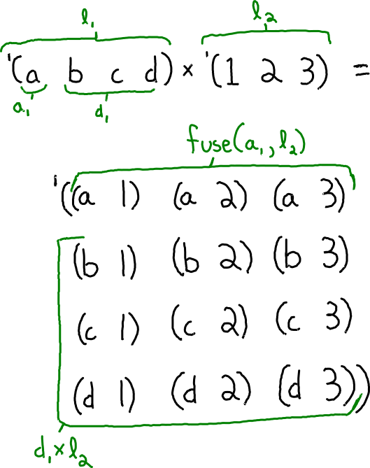

|# (load "../faster-clpset-minikanren/mk-vicare.scm") (load "../faster-clpset-minikanren/sets.scm") (load "../faster-clpset-minikanren/mk.scm") (load "../faster-clpset-minikanren/numbers.scm") #|
Consider the following table of astrological signs and their English meanings:
| Astrological Sign | Meaning |
|---|---|
| Aries | The Ram |
| Taurus | The Bull |
| Gemini | The Twins |
| Cancer | The Crab |
| Leo | The Lion |
| Virgo | The Maiden |
| Libra | The Scales |
| Scorpio | The Scorpion |
| Sagittarius | The Archer |
| Capricorn | The Goat |
| Aquarius | The Water-bearer |
| Pisces | The Fish |
There are many things to appreciate about this table. I can consult it to see the full list of astrological signs. If I forget the meaning of "Gemini", I can find its row and look at its associated meaning, "The Twins". If I remember that one of the signs corresponds to "The Archer", I can likewise search in the reverse direction to confirm that I was thinking of "Sagittarius".
This table is easily encodable in a relational programming language. The relational language used throughout this document is miniKanren, specifically the "TRS2E" dialect found in The Reasoned Schemer, 2nd Edition. In miniKanren, here's what the astrological sign and meaning relation looks like:
|#
(defrel (zodiaco sign meaning)
(conde
((== sign 'aries) (== meaning 'the-ram))
((== sign 'taurus) (== meaning 'the-bull))
((== sign 'gemini) (== meaning 'the-twins))
((== sign 'cancer) (== meaning 'the-crab))
((== sign 'leo) (== meaning 'the-lion))
((== sign 'virgo) (== meaning 'the-virgin))
((== sign 'libra) (== meaning 'the-scales))
((== sign 'scorpio) (== meaning 'the-scorpion))
((== sign 'sagittarius) (== meaning 'the-archer))
((== sign 'capricorn) (== meaning 'the-goat))
((== sign 'aquarius) (== meaning 'the-water-bearer))
((== sign 'pisces) (== meaning 'the-fish))))
#|
Lists in miniKanren follow the tradition of recursively-defined linked lists
from functional and logic programming. Often this document will follow a
convention of using a and d as logic variables to
describe the head and tail of a non-empty list. This is in the tradition of the
host language functions car and cdr.
Here is proper-listo from The Reasoned Schemer, 2nd edition:
|#
(defrel (proper-listo l)
(conde
((== l '()))
((fresh (a d)
(== l `(,a . ,d))
(proper-listo d)))))
#|
There are certain miniKanren relations which describe types and data structures. The relations should not be used directly, because they can ground variables too soon. Instead, use these as a pattern match for each clause.
This technique is related to the following logical rule:
((p ^ a) v (¬p ^ b)) ^ ((p ^ x) v (¬p ^ y)) ----------------------------- ( p ^ a ^ x) v (¬p ^ b ^ y)
A relation for detecting if a list is odd or even length is sometimes useful, especially if you can ground the length's parity (describing an infinite set of lists) before you commit to an a particular length.
|#
(defrel (length-parityo l p)
(conde
((== l '()) (== p 'even))
((fresh (a d rec)
(== l `(,a . ,d))
(conde
((== p 'odd) (== rec 'even))
((== p 'even) (== rec 'odd)))
(length-parityo d rec)))))
#|
appendo
The classic relation over lists is appendo, which constrains three
lists, l, r, and l++r such that
l++r is the concatenation of l and r.
Note that appendo is already defined in
faster-clpset-minikanren/numbers.scm.
(defrel (appendo l r l++r)
(conde
((== l '()) (== l++r r))
((fresh (a d d++r)
(== l `(,a . ,d))
(== l++r `(,a . ,d++r))
(appendo d r d++r)))))
For an introduction to appendo, watch this clip at 34:12 of Will
Byrd presenting a tutorial at the 2023 miniKanren workshop:
https://youtu.be/e_yc9YaLNDE?t=2052.
There are many things to appreciate about this relation. As Will mentions, it
is very similar to a recursive definition of the append function over
cons lists from functional programming, and the relational definition of
appendo can be derived from regular transformations over the
functional definition of append.
Another interesting property of this relation is that when l++r is
known, then all possible values for l and r can be
enumerated with run*. Being able to "run backwards" using
run* can be difficult to achieve.
Look what happens when all arguments remain fresh:
> (run 5 (l r l++r) (appendo l r l++r)) ((() _0 _0) ((_0) _1 (_0 . _1)) ((_0 _1) _2 (_0 _1 . _2)) ((_0 _1 _2) _3 (_0 _1 _2 . _3)) ((_0 _1 _2 _3) _4 (_0 _1 _2 _3 . _4)))
What we see here are the first 5 elements of an infinite enumeration of
triples. Each successive result has l length instantiated to the
next length, while r remains fresh, and l++r is
constrained to being a list which has l as a prefix and
r as a tail, exactly the definition of appending. The fact that
l is length-instantiated and r remains fresh is a
consequence of using cons lists. It is not easy to create an append relation
which length-instantiates r and leaves l fresh due to
the representation of lists in the host language.
These two facts: that appendo length-instantiates l,
and that r remains fresh when l++r is fresh, can be
determined statically; they can be known just by looking at the code.
Within the appendo relation, there is actually a definition of
proper-listo: l is either the empty list, or it is
the pair `(,a . ,d) with the recursive promise that d
is itself a proper list. It is easier to see the fact about r. The
only time r is mentioned in the appendo code is when
it is unified with l++r.
This static analysis of miniKanren relations is a promising area of research. It would be very useful, say, in an IDE, to automatically know some of the consequences of calling a relation on certain arguments.
One other thing to note is that even though r is free, it really
represents a proper list, even though a call to something like
(appendo '(a b c) 'foo '(a b c . foo)) will succeed. In miniKanren
implementations embedded in Scheme, like TRS2e miniKanren and
faster-miniKanren, the programmer is responsible for maintaining this type
constraint. But there are implementations that can enforce this constraint at
compile-time, like
typedKanren.
One final observation: This appendo definition benefits from the
ability to write variable names in Scheme which can contain special symbols.
Here we rely on convention to help show that l++r is the result of
appending l to r, and similarly that
d++r is the result of appending d to r.
It can be annoying to have to name all the intermediate results in logic
programming, but at least we can take advantage of Scheme's flexible variable
naming to hint at the relationships between logic variables--it becomes clear
that there must be a call to (appendo d r d++r) somewhere in the
relation definition.
Peano numerals are represented as a list of repetitions of the symbol
s. For example, three is '(s s s), five is
'(s s s s s), and zero is the empty list, '().
|#
(defrel (peanoo n)
(conde
((== n '()))
((fresh (n-1)
(== n `(s . ,n-1))
(peanoo n-1)))))
#|
There is a little-endian binary representation of natural numerals hereafter known as Oleg numerals. Below is the analogous "grounding" relation.
|#
(defrel (olego n)
(conde
((== n '()))
((fresh (a d)
(== n `(,a . ,d))
(conde
((== a 0) (poso d))
((== a 1)))
(olego d)))))
#|
See
Pure, Declarative, and Constructive Arithmetic Relations by Kiselyov, et al.
for further details.
Many relational programs require bounding one natural number to be less than another. Here's a standard recursive definition over Peano numerals m and n: m is less than n either if m is zero and n is nonzero (i.e., a successor to a natural number n-1) or if both m and n are nonzero, but m-1 is less than n-1.
|#
(defrel (peano-lto/1 m n)
(fresh (n-1)
(== n `(s . ,n-1))
(conde
((== m '()))
((fresh (m-1)
(== m `(s . ,m-1))
(peano-lto/1 m-1 n-1))))))
#|
> (run 5 (m n) (peano-lto/1 m n)) ((() (s . _.0)) ((s) (s s . _.0)) ((s s) (s s s . _.0)) ((s s s) (s s s s . _.0)) ((s s s s) (s s s s s . _.0)))
This is decent. Each row, when run with fresh variables, represents an infinite subset of answers. For example, the first row implies that 0 < 1, and 0 < 2, and 0 < 3, and so on. The second row implies that 1 < 2, and 1 < 3, and so on.
This does capture the set of all pairs of natural numbers where m is less than n. And it covers an infinite subset each time.
But it's not great because during execution, any argument to m will be fully ground when it comes out. Which means that when m is used later on, it's only ever going to be one possible natural number. This can lead to undesirable generate-and-test behavior.
Here's an idea on how to represent sets of natural numbers in miniKanren.
I want to start with the simplest thing I can think of: testing a subset of the naturals for membership. I'm still thinking about how to implement testing for non-membership.
If you were to ask me which subset of the naturals contains 4, and 0, and 3, I'd say {0 ... 3, 4, ... }.
|#
(defrel (elemo n s)
(fresh (l m r)
(== s `(,l ,m ,r))
(conde
((== n '()) (== m #t))
((fresh (a d rec)
(== n `(,a . ,d))
(conde
((== a 0) (poso d) (== rec l))
((== a 1) (== rec r)))
(elemo d rec))))))
#|
> (run* (q) (elemo '(0 0 1) q)
(elemo '() q)
(elemo '(1 1) q))
'((((_.0 _.1 (_.2 #t _.3)) _.4 _.5) #t (_.6 _.7 (_.8 #t _.9))))
Raffi Sanna helped me figure out the code for its complement:
(defrel (not-elemo n s)
(fresh (l r)
(conde
((== s '()))
((== n '()) (== s `(,l #f ,r)))
((fresh (val b rec)
(== s `(,val ,l ,r))
(conde
((== n `(0 . ,b)) (poso b) (== rec l))
((== n `(1 . ,b)) (== rec r)))
(not-elemo b rec))))))
It is also possible to write conjo, which a relation analogous to
conso, but over sets. Since sets lack order and duplicates, this
implementation must be careful to assert that the element picked could be any
Oleg numeral n that a set s+n has whose removal
admits the set s.
|#
(defrel (conjo n s s+n)
(fresh (n//2 z l r l+n//2 r+n//2)
(conde
((== n '()) (== s #f) (== s+n '(#t #f #f)))
((== n '()) (== s `(#f ,l ,r)) (== s+n `(#t ,l ,r)))
((fresh (t t+n//2)
(conde
((== n `(0 . ,n//2)) (poso n//2)
(== s #f) (== t #f) (== s+n `(#f ,t+n//2 #f)))
((== n `(1 . ,n//2))
(== s #f) (== t #f) (== s+n `(#f #f ,t+n//2)))
((== n `(0 . ,n//2)) (poso n//2)
(== s `(,z ,l ,r)) (== t l)
(== s+n `(,z ,t+n//2 ,r)))
((== n `(1 . ,n//2))
(== s `(,z ,l ,r)) (== t r)
(== s+n `(,z ,l ,t+n//2))))
(conjo n//2 t t+n//2))))))
#|
It is possible to construct a set of pairs of natural numbers by using a pairing relation, discussed in the next section.
Pigeon's pairing relation looks promising, but unlike our Oleg numbers, which end on their last 1, the algorithm in the above link treats its binary numbers as if they have an infinite tail of zeros. Because of this mismatch, the cases need to be considered carefully. I have chosen to break it up into three cases (zero, one, and greater-than-one) in order to ensure all Oleg numbers involved end in a 1.
|#
(defrel (pairingo i j p)
(conde
((== i '()) (== j '()) (== p '()))
((== i '(1)) (== j '()) (== p '(1)))
((== i '()) (== j '(1)) (== p '(0 1)))
((== i '(1)) (== j '(1)) (== p '(1 1)))
((fresh (i0 j0 i1 j1 irest jrest i//2 j//2 rec)
(== p `(,i0 ,j0 . ,rec))
(conde
((== i '()) (== i0 0) (== i//2 '())
(== j `(,j0 ,j1 . ,jrest)) (== j//2 `(,j1 . ,jrest)))
((== i '(1)) (== i0 1) (== i//2 '())
(== j `(,j0 ,j1 . ,jrest)) (== j//2 `(,j1 . ,jrest)))
((== i `(,i0 ,i1 . ,irest)) (== i//2 `(,i1 . ,irest))
(== j '()) (== j0 0) (== j//2 '()))
((== i `(,i0 ,i1 . ,irest)) (== i//2 `(,i1 . ,irest))
(== j '(1)) (== j0 1) (== j//2 '()))
((== i `(,i0 ,i1 . ,irest)) (== i//2 `(,i1 . ,irest))
(== j `(,j0 ,j1 . ,jrest)) (== j//2 `(,j1 . ,jrest))))
(pairingo i//2 j//2 rec)))))
#|
With this relation it is now possible to represent a set of pairs as sets of their pairigs. This also allows an efficient representation of graphs as a set of directed edges.
|#
(defrel (even-odd-helpero n diff)
(conde
[(== n '()) (== diff 0)]
[(== n '(1)) (== diff 2)]
[(== n '(0 1)) (== diff 1)]
[(== n '(1 1)) (== diff 0)]
[(fresh (a ad dd new-diff)
(== n `(,a ,ad . ,dd))
(poso dd)
(conde
[(== a ad) (== diff new-diff)]
[(== `(,a ,ad) '(0 1)) (+1mod3o new-diff diff)]
[(== `(,a ,ad) '(1 0)) (+1mod3o diff new-diff)])
(even-odd-helpero dd new-diff))]))
(defrel (div3o/even-odd n)
(even-odd-helpero n 0))
(defrel (+1mod3o n n+1)
(conde
[(== n 0) (== n+1 1)]
[(== n 1) (== n+1 2)]
[(== n 2) (== n+1 0)]))
#|
> (run 30 (q) (div3o/even-odd q)) ((()) ((1 1)) ((_0 _0 1 1)) ((_0 _0 _1 _1 1 1)) ((0 1 1)) ((1 0 0 1)) ((_0 _0 _1 _1 _2 _2 1 1)) ((0 1 _0 _0 1)) ((_0 _0 0 1 1)) ((1 0 _0 _0 0 1)) ((_0 _0 1 0 0 1)) ((_0 _0 _1 _1 _2 _2 _3 _3 1 1)) ((0 1 _0 _0 _1 _1 1)) ((_0 _0 0 1 _1 _1 1)) ((1 0 _0 _0 _1 _1 0 1)) ((_0 _0 _1 _1 0 1 1)) ((0 1 0 1 0 1)) ((_0 _0 1 0 _1 _1 0 1)) ((1 0 0 1 1 1)) ((_0 _0 _1 _1 1 0 0 1)) ((0 1 1 0 1 1)) ((1 0 1 0 1)) ((_0 _0 _1 _1 _2 _2 _3 _3 _4 _4 1 1)) ((0 1 _0 _0 _1 _1 _2 _2 1)) ((_0 _0 0 1 _1 _1 _2 _2 1)) ((1 0 _0 _0 _1 _1 _2 _2 0 1)) ((_0 _0 _1 _1 0 1 _2 _2 1)) ((0 1 0 1 _0 _0 0 1)) ((_0 _0 1 0 _1 _1 _2 _2 0 1)) ((1 0 0 1 _0 _0 1 1)))
Consider the way a dealer shuffles cards like in the below GIF. Two separate decks get combined into one larger deck.

In miniKanren, this would be a relationship between a list l1, a
list l2, and their riffled output l1Ul2. Here, the
U in l1Ul2 is meant to look like multiset union.
We will write the miniKanren code as if it is checking to make sure the riffled
output is correct and follows logically from the inputs. First, let's check the
easy case: if one of l1 or l2 is empty, then the
riffled output is just the other list.
(defrel (riffleo l1 l2 l1Ul2)
(conde
;; If one of l1 or l2 is empty, then the riffled output is is equal to the
;; other list.
((== l1 '()) (== l1Ul2 l2))
((== l2 '()) (== l1Ul2 l1))
;; TODO: When both `a` and `b` are non-empty
))
These cases are overlapping when both a and b are empty. It is good practice to
"expand out" the overlapping cases. So there should be three base cases: when
only l is empty, when only r is empty, and when they
are both empty.
As usual, we must positively express non-emptiness by asserting the existence of a head and tail for the nonempty list.
(defrel (riffleo l1 l2 l1Ul2)
(fresh (a1 d1 a2 d2)
(conde
;; If l1 and l2 are both empty, then the output is empty.
((== l1 '()) (== l2 '()) (== l1Ul2 '()))
;; If l1 is nonempty and l2 is empty, then the output is l1.
((== l1 `(,a1 . ,d1)) (== l2 '()) (== l1Ul2 l1))
;; If l1 is empty and l2 is nonempty, then the output is l2.
((== l1 '()) (== l2 `(,a2 . ,d2)) (== l1Ul2 l2))
;; TODO: when both l1 and l2 are nonempty
)))
The recursive case is when both l1 and l2 are
nonempty, meaning they both contain a head (a1 and
a2, respectively) and a tail (d1 and
d2). In the above GIF, either a left card falls into the output
deck, or the right card does. Either way, the riffle shuffle continues. So we
have two nonempty cases: either a1 sits at the top of the deck
(meaning the rest of the deck is the result of riffling d1 with
the intact l2), or vice versa: a2 sits at the top of
the deck and the rest is l1 riffled with d2.
|#
(defrel (riffleo/v1 l1 l2 l1Ul2)
(fresh (a1 d1 a2 d2 l1Ud2 d1Ul2)
(conde
;; If l1 and l2 are both empty, then the output is empty.
((== l1 '()) (== l2 '()) (== l1Ul2 '()))
;; If l1 is nonempty and l2 is empty, then the output is l1.
((== l1 `(,a1 . ,d1)) (== l2 '()) (== l1Ul2 l1))
;; If l1 is empty and l2 is nonempty, then the output is l2.
((== l1 '()) (== l2 `(,a2 . ,d2)) (== l1Ul2 l2))
;; When both l1 and l2 are nonempty
((== l1 `(,a1 . ,d1)) (== l2 `(,a2 . ,d2))
(conde
;; Either a1 is the first element in the riffled list
((== l1Ul2 `(,a1 . ,d1Ul2)) (riffleo/v1 d1 l2 d1Ul2))
;; Or, a2 is the first element in the riffled list
((== l1Ul2 `(,a2 . ,l1Ud2)) (riffleo/v1 l1 d2 l1Ud2)))))))
#|
The above has the suffix /v1 because, although the code is
complete, there is room for improvement.
In riffleo/v1, there are two recursive calls. By introducing fresh
variables, this recursive call can be factored out (or undistributed) from the
conde.
|#
(defrel (riffleo/v2 l1 l2 l1Ul2)
(fresh (a1 d1 a2 d2 l1Ud2 d1Ul2 x y xUy)
(conde
;; If l1 and l2 are both empty, then the output is empty.
((== l1 '()) (== l2 '()) (== l1Ul2 '()))
;; If l1 is nonempty and l2 is empty, then the output is l1.
((== l1 `(,a1 . ,d1)) (== l2 '()) (== l1Ul2 l1))
;; If l1 is empty and l2 is nonempty, then the output is l2.
((== l1 '()) (== l2 `(,a2 . ,d2)) (== l1Ul2 l2))
;; When both l1 and l2 are nonempty
((== l1 `(,a1 . ,d1)) (== l2 `(,a2 . ,d2))
(conde
;; Either a1 is the first element in the riffled list
((== l1Ul2 `(,a1 . ,d1Ul2)) (== `(,x ,y ,xUy) `(,d1 ,l2 ,d1Ul2)))
;; Or, a2 is the first element in the riffled list
((== l1Ul2 `(,a2 . ,l1Ud2)) (== `(,x ,y ,xUy) `(,l1 ,d2 ,l1Ud2))))
;; Either way, continue riffling
(riffleo/v2 x y xUy)))))
#|
Let this be the canonical implementation of riffling.
|# (defrel (riffleo l1 l2 l1Ul2) (riffleo/v2 l1 l2 l1Ul2)) #|
Here are some useful observations around "riffling", asserted without proof.
Since riffleo can be thought of as a generalization of
appendo, it has many of the same properties.
a comes before another element b in one of
the lists being riffled, then a must also come before
b in the output list. Riffling, in some sense, preserves the
internal order of both its input lists.
(riffleo a b c) produces the same solution set as
(riffleo b a c). When you riffle shuffle two decks together, does
it really matter which deck is in your left hand and which is in your right?
riffleo to solve the 3-partition problem
Consider the NP-complete
3-partition problem, where the input is a list l of 3n numbers
and the output is a list partitions of n triples, such that each
partition adds up to the same sum and each element in each triple
is contained exactly once in l. In miniKanren, this problem can be
described as a relationship between input and output as follows:
When the input list l is empty, there are no partitions.
By vacuous truth, all the partitions add up to the same sum.
When l is nonempty, then it must have at least three elements that
add up to the sum, and the rest of the elements of l
must also form a 3-partition with the same sum. Crucially, the
three elements that add up to the sum (call them e1,
e2, and e3) can be picked, or "unriffled", from
l.
|#
(defrel (3-partitiono l partitions sum)
(conde
((== l '()) (== partitions '()))
((fresh (e1 e2 e3 e1+e2 rest-l rest-partitions)
(== partitions `((,e1 ,e2 ,e3) . ,rest-partitions))
(riffleo `(,e1 ,e2 ,e3) rest-l l)
(pluso e1 e2 e1+e2)
(pluso e1+e2 e3 sum)
(3-partitiono rest-l rest-partitions sum)))))
#|
Notice how this upholds the invariant that l is of some length 3n,
since three elements are picked from l recursively until it is
empty.
Let's see how this relation fares against
this first example from Wikipedia. Of course, pluso only works
on Oleg numerals, so in order to convert the decimal inputs from the example,
build-num is used.
> (run 1 (partitions sum)
(3-partitiono
(map build-num '(20 23 25 30 49 45 27 30 30 40 22 19))
partitions
sum))
> (run 1 (partitions sum)
(3-partitiono
(map build-num '(20 23 25 30 49 45 27 30 30 40 22 19))
partitions
sum))
((( ((0 0 1 0 1) (1 0 0 1 1) (1 0 1 1 0 1))
((1 1 1 0 1) (1 1 0 1 1) (0 0 0 1 0 1))
((0 1 1 1 1) (0 1 1 1 1) (0 1 1 1 1) )
((1 0 0 0 1 1) (0 1 1 0 1) (1 1 0 0 1) ))
(0 1 0 1 1 0 1)))
Interpreting these results in decimal shows that the original list can be
partitioned into the triples (20 25 45), (23 27 40),
(30 30 30), and (49 22 19), each summing to 90.
Another NP-complete problem is 3SAT: given a list of triples, where each element in the triple represents a literal, that is, a number representing the ith variable along with a boolean representing the positive or negative version of the literal, does there exist a mapping of each variable index to a boolean such that every triple contains at least one correct assignment?
In order to encode 3SAT in miniKanren, we need a way to look up a variable's value. A trie can help here, similar to a set of Oleg numerals.
|#
(defrel (lookupo/trie map n val)
(fresh (v l r)
(== map `(,v ,l ,r))
(conde
((== n '()) (== val v))
((fresh (a d rest-map)
(== n `(,a . ,d))
(conde
((== a 0) (poso d) (== rest-map l))
((== a 1) (== rest-map r)))
(lookupo/trie rest-map d val))))))
#|
A negative form of lookupo/trie is not needed for 3SAT, because
the mapping can remain open-ended for Oleg numerals that do not appear in the
formula.
|#
(defrel (3sato dnf assignments)
(conde
((== dnf '()))
((fresh (v1 v2 v3 p1 p2 p3 v p rest-dnf)
(== dnf `((,p1 ,v1 ,p2 ,v2 ,p3 ,v3) . ,rest-dnf))
(conde
((== p1 p) (== v1 v))
((== p2 p) (== v2 v))
((== p3 p) (== v3 v)))
(lookupo/trie assignments v p)
(3sato rest-dnf assignments)))))
#|
Let's see if it can detect that the following formula is unsatisfiable.
> (run 1 (q)
(3sato '((#t () #t (1) #t (0 1))
(#t () #t (1) #f (0 1))
(#t () #f (1) #t (0 1))
(#t () #f (1) #f (0 1))
(#f () #t (1) #t (0 1))
(#f () #t (1) #f (0 1))
(#f () #f (1) #t (0 1))
(#f () #f (1) #f (0 1))) q))
()
It can! How about removing the last line? It should then be satisfiable, when
all three variables are assigned to #t.
> (run 1 (q)
(3sato '((#t () #t (1) #t (0 1))
(#t () #t (1) #f (0 1))
(#t () #f (1) #t (0 1))
(#t () #f (1) #f (0 1))
(#f () #t (1) #t (0 1))
(#f () #t (1) #f (0 1))
(#f () #f (1) #t (0 1))) q))
(((#t (_0 _1 (#t _2 _3)) (#t _4 _5))))
That works too! In fact that should be the only answer.
> (run* (q)
(3sato '((#t () #t (1) #t (0 1))
(#t () #t (1) #f (0 1))
(#t () #f (1) #t (0 1))
(#t () #f (1) #f (0 1))
(#f () #t (1) #t (0 1))
(#f () #t (1) #f (0 1))
(#f () #f (1) #t (0 1))) q))
(((#t (_0 _1 (#t _2 _3)) (#t _4 _5)))
((#t (_0 _1 (#t _2 _3)) (#t _4 _5)))
((#t (_0 _1 (#t _2 _3)) (#t _4 _5)))
((#t (_0 _1 (#t _2 _3)) (#t _4 _5)))
((#t (_0 _1 (#t _2 _3)) (#t _4 _5)))
((#t (_0 _1 (#t _2 _3)) (#t _4 _5)))
((#t (_0 _1 (#t _2 _3)) (#t _4 _5)))
((#t (_0 _1 (#t _2 _3)) (#t _4 _5)))
((#t (_0 _1 (#t _2 _3)) (#t _4 _5)))
((#t (_0 _1 (#t _2 _3)) (#t _4 _5)))
((#t (_0 _1 (#t _2 _3)) (#t _4 _5)))
((#t (_0 _1 (#t _2 _3)) (#t _4 _5)))
((#t (_0 _1 (#t _2 _3)) (#t _4 _5)))
((#t (_0 _1 (#t _2 _3)) (#t _4 _5)))
((#t (_0 _1 (#t _2 _3)) (#t _4 _5)))
((#t (_0 _1 (#t _2 _3)) (#t _4 _5)))
((#t (_0 _1 (#t _2 _3)) (#t _4 _5)))
((#t (_0 _1 (#t _2 _3)) (#t _4 _5)))
((#t (_0 _1 (#t _2 _3)) (#t _4 _5)))
((#t (_0 _1 (#t _2 _3)) (#t _4 _5)))
((#t (_0 _1 (#t _2 _3)) (#t _4 _5)))
((#t (_0 _1 (#t _2 _3)) (#t _4 _5)))
((#t (_0 _1 (#t _2 _3)) (#t _4 _5)))
((#t (_0 _1 (#t _2 _3)) (#t _4 _5))))
Each identical answer here corresponds to an "execution path" the verifier took--whether to satisfy using the first, second, or third literal for each clause.
The 1-in-3SAT problem asks if it is possible to satisfy exactly one of the 3 literals in a 3-DNF.
It is related to 3SAT.
We of course need some sort of lookup from the variables to their true/false
assignment. The classic miniKanren lookupo will do.
|#
(defrel (lookupo a key val)
(fresh (k^ v^ rest)
(== a `((,k^ . ,v^) . ,rest))
(conde
((== key k^) (== val v^))
((=/= key k^) (lookupo rest key val)))))
#|
> (run 5 (a b c) (lookupo a b c))
((((_.0 . _.1) . _.2) _.0 _.1)
((((_.0 . _.1)
(_.2 . _.3) . _.4) _.2 _.3)
(=/= ((_.0 _.2))))
((((_.0 . _.1)
(_.2 . _.3)
(_.4 . _.5) . _.6) _.4 _.5)
(=/= ((_.0 _.4)) ((_.2 _.4))))
((((_.0 . _.1)
(_.2 . _.3)
(_.4 . _.5)
(_.6 . _.7) . _.8) _.6 _.7)
(=/= ((_.0 _.6)) ((_.2 _.6)) ((_.4 _.6))))
((((_.0 . _.1)
(_.2 . _.3)
(_.4 . _.5)
(_.6 . _.7)
(_.8 . _.9) . _.10) _.8 _.9)
(=/= ((_.0 _.8)) ((_.2 _.8)) ((_.4 _.8)) ((_.6 _.8)))))
|#
(defrel (1-in-3sato/1 dnf assignments)
(fresh (l v l1 v1 l2 v2 l3 v3 rest)
(conde
((== dnf '()))
((== dnf `((,l1 ,v1 ,l2 ,v2 ,l3 ,v3) . ,rest))
(conde
((== v v1) (== l l1) (=/= l l2) (=/= l l3))
((== v v2) (=/= l l1) (== l l2) (=/= l l3))
((== v v3) (=/= l l1) (=/= l l2) (== l l3)))
(lookupo assignments v l)
(1-in-3sato/1 rest assignments)))))
(defrel (1-in-3sato/2 dnf assignments)
(fresh (l v l1 v1 l2 v2 l3 v3 rest)
(conde
((== dnf '()))
((== dnf `((,l1 ,v1 ,l2 ,v2 ,l3 ,v3) . ,rest))
(lookupo assignments v l)
(conde
((== v v1) (== l l1) (=/= l l2) (=/= l l3))
((== v v2) (=/= l l1) (== l l2) (=/= l l3))
((== v v3) (=/= l l1) (=/= l l2) (== l l3)))
(1-in-3sato/2 rest assignments)))))
#|
> (run 5 (a b) (1-in-3sato/1 a b))
((() _.0)
((((_.0 _.1 _.2 _.3 _.4 _.5)) ((_.1 . _.0) . _.6))
(=/= ((_.0 _.2)) ((_.0 _.4))))
((((_.0 _.1 _.2 _.3 _.4 _.5)) ((_.3 . _.2) . _.6))
(=/= ((_.0 _.2)) ((_.2 _.4))))
((((_.0 _.1 _.2 _.3 _.4 _.5) (_.0 _.1 _.6 _.7 _.8 _.9))
((_.1 . _.0) . _.10))
(=/= ((_.0 _.2)) ((_.0 _.4)) ((_.0 _.6)) ((_.0 _.8))))
((((_.0 _.1 _.2 _.3 _.4 _.5))
((_.6 . _.7) (_.1 . _.0) . _.8))
(=/= ((_.0 _.2)) ((_.0 _.4)) ((_.1 _.6)))))
> (run 5 (a b) (1-in-3sato/2 a b))
((() _.0)
((((_.0 _.1 _.2 _.3 _.4 _.5)) ((_.1 . _.0) . _.6))
(=/= ((_.0 _.2)) ((_.0 _.4))))
((((_.0 _.1 _.2 _.3 _.4 _.5)) ((_.3 . _.2) . _.6))
(=/= ((_.0 _.2)) ((_.2 _.4))))
((((_.0 _.1 _.2 _.3 _.4 _.5) (_.0 _.1 _.6 _.7 _.8 _.9))
((_.1 . _.0) . _.10))
(=/= ((_.0 _.2)) ((_.0 _.4)) ((_.0 _.6)) ((_.0 _.8))))
((((_.0 _.1 _.2 _.3 _.4 _.5)) ((_.5 . _.4) . _.6))
(=/= ((_.0 _.4)) ((_.2 _.4)))))
|#
(define (3coloro graph red green blue)
(conde
((== graph empty-set))
((fresh (u v rest)
(== graph (set rest (set empty-set u v)))
(conde
((ino u red) (ino v green))
((ino u red) (ino v blue))
((ino u green) (ino v red))
((ino u green) (ino v blue))
((ino u blue) (ino v red))
((ino u blue) (ino v green)))
(3coloro rest red green blue)))))
(define (3coloro/1 graph red green blue)
(disjo red green)
(disjo red blue)
(disjo green blue)
(3coloro graph red green blue))
(define (3coloro/2 graph red green blue)
(3coloro graph red green blue)
(disjo red green)
(disjo red blue)
(disjo green blue))
(define triangle
(set
empty-set
(set empty-set 0 1)
(set empty-set 0 2)
(set empty-set 1 2)))
(define diamond
(set
empty-set
(set empty-set 0 1)
(set empty-set 0 2)
(set empty-set 1 2)
(set empty-set 1 3)
(set empty-set 2 3)))
(define k4
(set
empty-set
(set empty-set 0 1)
(set empty-set 0 2)
(set empty-set 1 2)
(set empty-set 1 3)
(set empty-set 2 3)
(set empty-set 0 3)))
(define (3coloro/enum graph red green blue)
(conde
((== graph empty-set))
((fresh (u v rest)
(== graph (set rest (set empty-set u v)))
(conde
(( ino u red) (!ino u green) (!ino u blue)
(!ino v red) ( ino v green) (!ino v blue))
(( ino u red) (!ino u green) (!ino u blue)
(!ino v red) (!ino v green) ( ino v blue))
((!ino u red) ( ino u green) (!ino u blue)
( ino v red) (!ino v green) (!ino v blue))
((!ino u red) ( ino u green) (!ino u blue)
(!ino v red) (!ino v green) ( ino v blue))
((!ino u red) (!ino u green) ( ino u blue)
( ino v red) (!ino v green) (!ino v blue))
((!ino u red) (!ino u green) ( ino u blue)
(!ino v red) ( ino v green) (!ino v blue)))
(3coloro/enum rest red green blue)))))
(define (try graph)
(run 1 (q) (fresh (x y z) (== q `(,x ,y ,z))
(3coloro/enum graph x y z))))
#|
When a directed graph has a path within it that visits every vertex, then that graph is called Hamiltonian. Such Hamiltonian graphs can be enumerated because we have the necessary data structures.
A recursive helper is needed to track which vertices of the graph that still need to be visited. It is also parameterized on what vertex to start from.
|#
(defrel (hamiltoniano/rec from unvisited edges path)
(conde
((== unvisited #f) (== path '()))
((fresh (edge rest-edges rest-path rest-unvisited next)
(== path `(,edge . ,rest-path))
(=/= from next)
(pairingo from next edge)
(conjo edge rest-edges edges)
(conjo next rest-unvisited unvisited)
(hamiltoniano/rec next rest-unvisited rest-edges rest-path)))))
#|
This recursive helper is great and all, but now any caller would need to provide the vertex to start from as well as the set of unvisited vertices. I think starting from N and generating the set of unvisited vertices to always be {0 ... N-1} would be fine. I don't want to deal with a directed graph on N vertices whose labels are anything other than [0, N).
Thus it would be nice to have a definition that relates a number N to the set {0..N-1}.
To align naming conventions with Python's range function, let this
relation be known as natset-rangeo.
|#
(defrel (natset-rangeo/v1 n s)
(conde
((== n '()) (== s #f))
((fresh (n-1 s-n-1)
(pluso '(1) n-1 n)
(conjo n-1 s-n-1 s)
(natset-rangeo/v1 n-1 s-n-1)))))
#|
This works, but it is very slow and very space-inefficient.
> (time (and (run 10 (a b) (natset-rangeo/v1 a b)) #f))
(time (and (run 10 ...) ...))
78 collections
0.750000000s elapsed cpu time, including 0.140625000s collecting
1.980415400s elapsed real time, including 0.345641800s collecting
649904080 bytes allocated, including 628027008 bytes reclaimed
#f
> (time (and (run 11 (a b) (natset-rangeo/v1 a b)) #f))
(time (and (run 11 ...) ...))
194 collections
2.375000000s elapsed cpu time, including 0.734375000s collecting
5.856774800s elapsed real time, including 1.351882100s collecting
1624130512 bytes allocated, including 1592387424 bytes reclaimed
#f
> (time (and (run 12 (a b) (natset-rangeo/v1 a b)) #f))
(time (and (run 12 ...) ...))
716 collections
9.843750000s elapsed cpu time, including 2.656250000s collecting
26.514091900s elapsed real time, including 6.865238700s collecting
6004670192 bytes allocated, including 5907913968 bytes reclaimed
#f
> (time (and (run 13 (a b) (natset-rangeo/v1 a b)) #f))
(time (and (run 13 ...) ...))
1129 collections
21.156250000s elapsed cpu time, including 6.328125000s collecting
44.833848200s elapsed real time, including 12.457083900s collecting
9460602608 bytes allocated, including 9505773472 bytes reclaimed
#f
This is frustratingly slow. Since there is a one-to-one relationship between a natural number N and the corresponding complete set of naturals {0 ... N-1}, when I give a fully ground natural number, I expect its corresponding set to be immediately computed, just like how unifying anything with a fully ground term will succeed or fail in constant time.
Thus hamiltoniano is a unary relation on a directed graph with
vertices labelled 0 to N-1 such that starting from any vertex (less than N),
there exists a path through every vertex.
|#
(defrel (hamiltoniano g path)
(fresh (n start unvisited unvisited-start rest u v uv)
(== path `(,start . ,rest))
(set-rangeo unvisited n)
(conjo uv unvisited-start unvisited)
(hamiltoniano/rec start unvisited-start g rest)))
#|
> (run 5 (edges path)
(hamiltoniano/rec
; Start from vertex 3:
'(1 1)
; Need to visit vertices {0, 1, 2}
'(#t (#f #f (#t #f #f)) (#t #f #f))
edges
path))
The Cartesian product, typically defined over sets, can be written in
miniKanren over lists, similar to Python's
itertools.product. Thus we can define a relation between three lists:
two "input" lists l1 and l2, and a third list
l1*l2 denoting their Cartesian product.
We recur over the first list l1. The base case is straightforward:
When l1 is empty, then the product is empty. It is like
multiplying by zero.
The recursive case is more interesting. I always like to start by drawing a picture and annotating things that should be named in green. This helps me figure out the relationships.

The picture shows that l1 is nonempty. It has a head
a1 and a tail d1. Since d1 is a sublist
we can define d1*l2, that is, the Cartesian product of
d1 and l2.
But this recursive result d1*l2 is not the only contributor to the
overall result l1*l2--a prefix involving a1 and
l1 is also needed. Let this prefix be called the fusion of
a1 and l1, defined below.
|#
(defrel (fuseo x l fusion)
(conde
((== l '()) (== fusion '()))
((fresh (a d rec)
(== l `(,a . ,d))
(== fusion `((,x ,a) . ,rec))
(fuseo x d rec)))))
#|
With this helper relation, the first version of a Cartesian product relation can be written.
|#
(defrel (cartesian-producto/v1 l1 l2 l1*l2)
(conde
((== l1 '()) (== l1*l2 '()))
((fresh (a1 d1 fusion d1*l2)
(== l1 `(,a1 . ,d1))
(fuseo a1 l2 fusion)
(appendo fusion d1*l2 l1*l2)
(cartesian-producto/v1 d1 l2 d1*l2)))))
#|
lengthoWriting a relation between a list and the Oleg numeral representation of its length is not straightforward.
At first, this seems like a simple translation from the recursive definition of the length function. The following definition is adapted from TRS2e page 104, box 120:
|#
(defrel (lengtho/1 l n)
(conde
((== l '()) (== n '()))
((fresh (a d n-1)
(== l `(,a . ,d))
(pluso n-1 '(1) n)
(lengtho/1 d n-1)))))
#|
In box 121, the relation is tested with run 1:
> (run 1 (n) (lengtho/1 '(jicama rhubarb guava) n)) ((1 1))
What happens if we ask for all answers? Since a list has only one length, we expect it to succeed once and halt.
> (run* (n) (lengtho/1 '(jicama rhubarb guava) n)) ...
Instead, the query runs forever! It cannot determine that the search is complete.
However, run* works for a different test. This query asks for
all lists that have 5 elements:
> (run* (ls) (lengtho/1 ls '(1 0 1))) ((_.0 _.1 _.2 _.3 _.4))
This query halts after producing one term that represents all lists of length 5.
Here is an alternate definition that recurs on n rather than
on the list. We use the standard recursion pattern over Oleg numbers. An
Oleg number is either:
Therefore, the corresponding list must be either empty, double the length of another list, or one more than double the length of another list. This definition factors out the "double length" computation to avoid redundancy:
|#
(defrel (lengtho/2 l n)
(conde
((== n '()) (== l '()))
((fresh (a d plus-one rec 2rec)
(== n `(,a . ,d))
(conde
((== a 0) (poso d) (== l 2rec))
((== a 1) (== l `(,plus-one . ,2rec))))
(double-lengtho rec 2rec)
(lengtho/2 rec d)))))
#|
lengtho/2 uses a helper relation, double-lengtho,
defined as follows:
|#
(defrel (double-lengtho l 2l)
(conde
((== l '()) (== 2l '()))
((fresh (x y z d 2d)
(== l `(,x . ,d))
(== 2l `(,y ,z . ,2d))
(double-lengtho d 2d)))))
#|
This is straightforward to write. Exercise for the reader: Write a relation over two lists that succeeds if there exists some n such that one list has length 2n+1 while the other has length 7n+3.
We can test lengtho/2 with the same queries:
> (run 1 (n) (lengtho/2 '(jicama rhubarb guava) n)) ((1 1)) > (run* (n) (lengtho/2 '(jicama rhubarb guava) n)) ... > (run* (ls) (lengtho/2 ls '(1 0 1))) ...
lengtho/2 diverges on both run* cases! We need a
third implementation that takes a fundamentally different approach.
This third relation steps outside the relational paradigm. To paraphrase Olin Shivers, it's okay to cheat as long as you don't get caught.
We inspect the list and its Oleg length manually using miniKanren's
project operator. This operator gives control back to the host
language to construct a miniKanren goal. project allows you to
examine logic terms in their current state (walked in the substitution) and
construct goals based on those values.
Using project responsibly requires careful consideration—it
does not provide safety guarantees. It's easy to accidentally write unsound
or incomplete relational programs with project, so we must be
very careful.
Despite these risks, project can help us write a robust version
of lengtho. Here's the approach:
Within a project, if l is a proper list, it has
exactly one length. Unification can enforce this one-to-one relationship. If
l is a partially instantiated list (a term that subsumes lists),
it must subsume an infinite family of lists. The same applies if l
is a fresh variable. If l is neither a proper list, nor a dotted
list with a variable tail, nor a fresh variable, then l can
never unify with a list.
Before implementing the project analysis, let's write host
language functions to recognize these cases. Scheme provides list?
for proper lists, and mk.scm provides var? for fresh
variables. We only need to define subsumes-list?:
|#
(define (subsumes-list? l)
(or
(var? l)
(and
(pair? l)
(subsumes-list? (cdr l)))))
#|
If l is a fully instantiated list, it has exactly one length,
so we unify n with that length. If l could unify
with a list but isn't fully instantiated, it unifies with an infinite family
of lists. We enumerate these by grounding n to any Oleg number
and using an existing lengtho that works correctly when
n is ground (like lengtho/1). Otherwise, we fail.
|#
(defrel (lengtho/3 l n)
(project (l n)
(cond
((list? l)
(== n (build-num (length l))))
((subsumes-list? l)
(fresh () (olego n) (lengtho/1 l n)))
(else fail))))
#|
Let's test it:
> (run* (n) (lengtho/3 '(jicama rhubarb guava) n)) ((1 1)) > (run* (ls) (lengtho/3 ls '(1 0 1))) ((_.0 _.1 _.2 _.3 _.4))
It halts on both queries! Now consider one more test case:
> (run 3 (q) (lengtho/3 q q)) (() (1) (0 1)) > (run 4 (q) (lengtho/3 q q)) ...
The query for Oleg numerals that describe their own length runs forever when
requesting a fourth solution. It can be proved by induction that no Oleg
number greater than 2 describes its own length. While this fact could be
encoded in another lengtho implementation, handling shared
variables creates complications. The paper that introduced Oleg numerals,
Pure, Declarative
and Constructive Relations, omits cases with shared variables since they
can represent arbitrary Diophantine equations, which are undecidable. I believe
lengtho should match this expectation: running forever with shared
variables is acceptable.
Therefore, let lengtho/3 be the canonical implementation of the
lengtho relation.
|# (defrel (lengtho l n) (lengtho/3 l n)) #||#